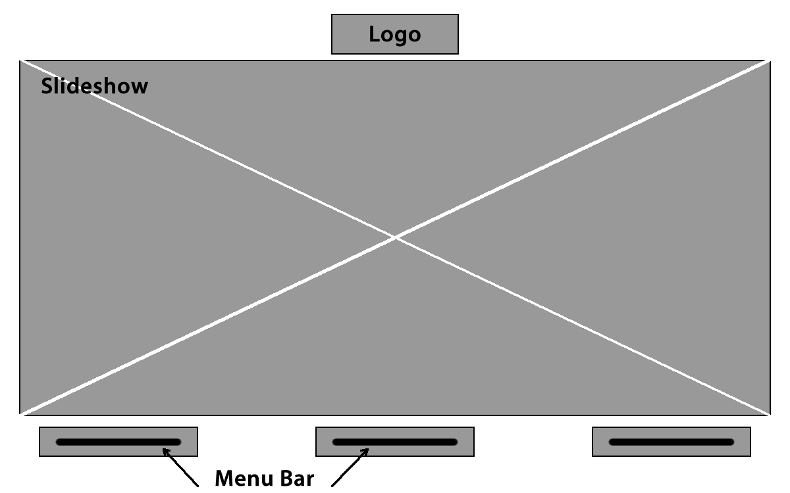

We created a few ideas of the homepage after creating our flowchart. We referenced a lot from other websites. We made wireframes to give the client an idea of the layout of the website and where the content goes.



We chose to use the third wireframe because we want the menu bar to stand out a bit more, because it is our call to action.
This is the storyboard I made in Fireworks.
After working with both Fireworks and Dreamweaver, I found the pros and cons for both programs. Below is a compare and contrast of the two ways of making the homepage.
Dreamweaver Pros
- CSS can easily be applied and many things are classified, making it very easy to change a lot of things at the same time. For example, if I don't like the font of a specific list, I can change the font of the whole list at the same time.
- The webpage can be made interactive much more easily. Dropdown menus can be made, while pages made my Firework do not really move.
- The components of a Dreamweaver webpage can be more easily changed because it is not a set image. Everything is added in, while in Fireworks, everything is in slices which are already set images.
Fireworks Pros
- Components can be moved more easily since the position is not absolute.